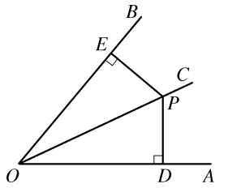
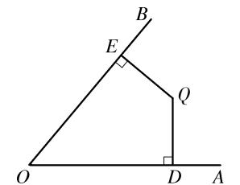
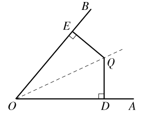
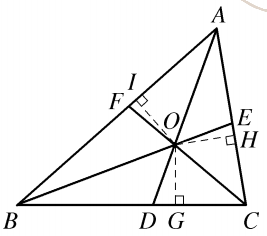
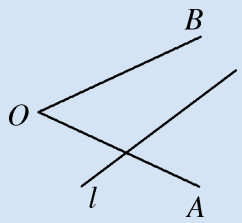
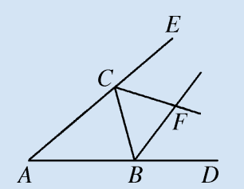
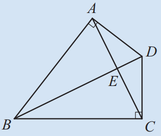

我们已经知道角是轴对称图形，角平分线所在的直线是角的对称轴。如图12.4.5，$OC$是$\angle AOB$的平分线，点$P$是$OC$上任意一点，作$PD \perp OA$，$PE \perp OB$，垂足分别为点$D$和点$E$。将$\angle AOB$沿$OC$对折，我们发现$PD$与$PE$完全重合。

由此我们得到角平分线的性质定理。
角平分线上的点到角两边的距离相等。
已知：如图12.4.5，$OC$是$\angle AOB$的平分线，点$P$是$OC$上的任意一点，$PD \perp OA$，$PE \perp OB$，垂足分别为点$D$和点$E$。
求证：$PD = PE$。
证明： $\because OC$平分$\angle AOB$，$\therefore \angle DOP = \angle EOP$。
$\because PD \perp OA$，$PE \perp OB$，$\therefore \angle PDO = \angle PEO = 90^\circ$。
在$\triangle PDO$和$\triangle PEO$中，
$\angle DOP = \angle EOP$（已证），$\angle PDO = \angle PEO$（已证），$PO = PO$（公共边），
$\therefore \triangle PDO \cong \triangle PEO$（AAS）。$\therefore PD = PE$。
这一定理描述了角平分线的性质，那么反过来会有什么结果呢？
写出该性质定理的逆命题，想想看，其逆命题是否是一个真命题？
性质定理： 角平分线上的点到角两边的距离相等。
逆命题： ________________________________________。
你能证明这个逆命题是真命题吗？下面给出证明过程（参考图12.4.6和12.4.7）。

已知：如图12.4.6，$QD \perp OA$，$QE \perp OB$，垂足分别为点$D$和点$E$，$QD = QE$。
求证：点$Q$在$\angle AOB$的平分线上。
证明：过点$O$、$Q$作射线$OQ$。
$\because QD \perp OA$，$QE \perp OB$，$\therefore \angle QDO = \angle QEO = 90^\circ$。
在Rt$\triangle QDO$和Rt$\triangle QEO$中，
$OQ = OQ$（公共边），$QD = QE$（已知），
$\therefore$ Rt$\triangle QDO \cong$ Rt$\triangle QEO$（HL）。$\therefore \angle DOQ = \angle EOQ$。
即$OQ$平分$\angle AOB$，故点$Q$在$\angle AOB$的平分线上。

于是得到角平分线的判定定理。
角的内部到角两边距离相等的点在角的平分线上。
于是，性质定理和判定定理互为逆定理。
📌 上述两条定理互为逆定理，根据上述两条定理，我们就能证明：三角形的三条角平分线交于一点！
如图12.4.8，要证明三角形的三条角平分线交于一点，只需证明其中两条角平分线的交点一定在第三条角平分线上。

设$\triangle ABC$中，$\angle A$和$\angle B$的平分线交于点$O$，过点$O$分别作$OD \perp BC$，$OE \perp AC$，$OF \perp AB$，垂足分别为$D$、$E$、$F$。
由角平分线性质定理得$OF = OE$，$OF = OD$，所以$OD = OE$。
因此点$O$也在$\angle C$的平分线上（判定定理）。故三角形三条角平分线交于一点。
试试看，你能独立写出完整的证明过程吗？


过点$F$作$FG \perp AB$，$FH \perp BC$，$FI \perp AC$，垂足分别为$G$、$H$、$I$。
由角平分线性质，$FG = FH$，$FH = FI$，所以$FG = FI$。
因此点$F$在$\angle DAE$的平分线上（角的内部到角两边距离相等的点在角的平分线上）。

由$\angle ABD = \angle CBD$，$DA \perp BA$，$DC \perp BC$，根据角平分线性质得$DA = DC$。
在$\triangle DAC$中，$DA = DC$，所以$\angle DAC = \angle DCA$（等边对等角）。
角平分线定理在现实世界中有很多真实的运用，下面介绍几个例子：
这些例子说明，角平分线定理不仅是数学课本上的知识，更是解决实际问题的有力工具。
• 转化思想： 将几何问题转化为全等三角形证明；
• 逆向思维： 性质与判定互逆，体会逻辑双向性；
• 归纳推理： 从特殊到一般，从实验操作到演绎证明；
• 模型思想： 角平分线是解决“到角两边等距”问题的基本模型。